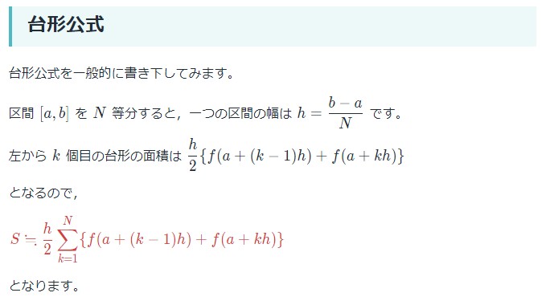
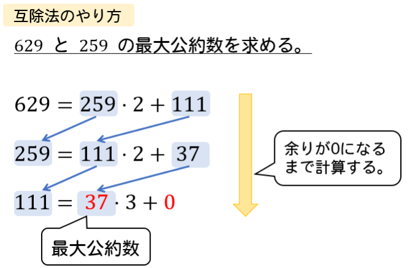

【確認課題】制御構文#
提出ファイル: prime_number.py
問 1. 素数判定#
自然数 \(n\) が与えられたとき、それが素数であるか、素数でないかを判定するコードを実装してください。
(1) \(61\) が素数であることを確認して下さい
(2) \(10\) が素数でないことを確認して下さい
問 2. 台形積分#
提出ファイル: trapezoidal_integral.py
\(\sin\) 関数の \([0, \frac{1}{2}\pi]\) における積分値を台形積分を用いて近似して下さい。区間の分割数は \(100\) とします。
\(\sin\) 関数の値の計算には math.sin を利用します。冒頭で import されているので、皆さんはsin(x) のように使えばよいです。

（台形積分の詳細はこちら）
問 3. ユークリッドの互除法#
提出ファイル: euclid.py
ユークリッドの互除法とは、割り算の式
$\(a = bq + r\)\(
において
「 \)a\( と \)b\( の最大公約数」 = 「 \)b\( と \)r\( の最大公約数」
となる性質を利用して \)a\( と \)b$ の最大公約数を求める方法です。

ユークリッドの互除法の詳細はこちら
各小問で与えられた自然数の組 \((a, b)\) の最大公約数を、ユークリッドの互除法を用いて求めて下さい。 ただし、(1) ~ (3) では、問題に応じて一部処理を変更するということはせず、全く同じプログラムを使用してください。
(1) \(10, 20\)
(2) \(14, 91\)
(3) \(91, 14\)
問 4. マシンイプシロン#
提出ファイル: machine_epsilon.py
Python において \(1 + \epsilon > 1\) が成立するような \(\epsilon\) の中で最小のものを求めてください。
まず、\(\epsilon = 1\) とすると、\(2 > 1\) より先程の不等式は成立します。 そこで、\(\epsilon\) を \(1/2,~1/4,~1/8,~...\) のように、2 分の 1 をすることでどんどん小さくしていくと、いつか \(\epsilon\) が小さくなりすぎて無視されます。
このような不等式 \(1 + \epsilon > 1\) を満たす最小の \(\epsilon\) は、マシンイプシロンと呼ばれています。